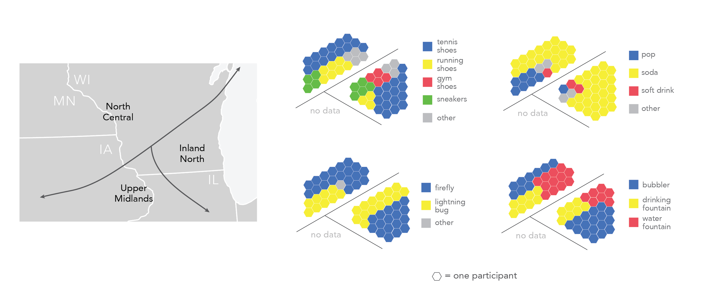

For our capstone course in geography, my group chose to examine linguistic characteristics of the UW–Madison community.
We surveyed participants in the area, collecting ZIP codes of their hometown(s) and audio recordings of
a carefully constructed paragraph containing selected words and sounds for further linguistic analysis. Survey results were
divided according to linguistic boundaries (above) created by Professors Thomas Purnell, Joseph Salmons, and Eric Raimy (Wisconsin Talk, 2013).
The above graphics are just a sample of the data that we collected; view the full set of appendices below, including linguistic boundaries
by linguist William Labov.
Data was collected and compiled by myself and my group members Alex McKenzie, Andres Mendez, and Tobin McGilligan, and I produced the graphics
using Project Linework. I presented this research at the 2018 Midwest Undergraduate Geography Symposium at UW–River Falls.